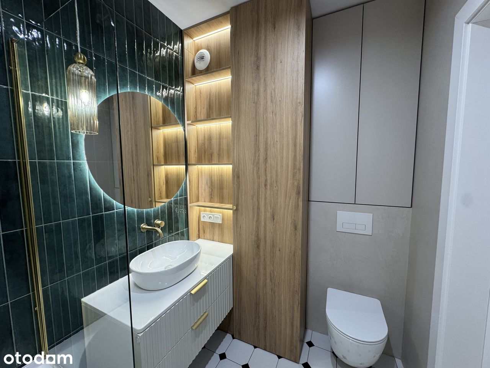

Nowoczesne, wykończone w wysokim standardzie, gotowe do zamieszkania!
Oferujemy przestronne i stylowe mieszkanie zlokalizowane na Osiedlu Wilno VII w Warszawie – inwestycji oddanej do użytku w listopadzie 2024 roku.
Rozkład pomieszczeń:
• Przestronny salon z aneksem kuchennym ( ponad 32 m²) – jasny, z dużymi oknami i wyjściem na loggię, elegancka jodełka na podłodze, ozdobne listwy ścienne i nowoczesne oświetlenie.
• Sypialnia (ponad 12 m²) – z dużą zabudowaną szafą oraz szafkami nocnymi.
• Gabinet / pokój dziecięcy (ponad 11 m²) – funkcjonalna przestrzeń do pracy lub odpoczynku.
• Łazienka (ponad 4 m²) – z wanną, podświetlanymi półkami, designerską armaturą i modną zieloną glazurą.
• Osobne WC z pralnią (około 2 m²) – z pełną zabudową stolarską i pralką.
• Hol ( ponad 9 m²) – z dużą szafą, siedziskiem oraz miejscem do przechowywania.
Kuchnia:
Kuchnia nie jest jeszcze zabudowana, co daje przyszłemu właścicielowi pełną swobodę aranżacyjną. Dostępny jest gotowy, dopracowany projekt kuchni.
Sprzęt AGD i RTV w zestawie:
• lodówka pod zabudowę,
• zmywarka pod zabudowę,
• piekarnik,
• płyta indukcyjna.
Loggia:
Duży balkon o powierzchni 8,67 m² – idealne miejsce do wypoczynku z widokiem na zieleń.
Standard wykończenia:
• Wykończenie w wysokim standardzie, z dbałością o każdy detal.
• Ogrzewanie podłogowe pod płytkami (hol, łazienka, WC).
• W salonie i pokojach parkiet dębowy.
• Szafy robione ma wymiar u stolarza, frontyw szafach lakierowane.
Dodatkowo płatne miejsce postojowe w garażu podziemnym wraz z komórką lokatorską w cenie 55000 zł.
Lokalizacja:
Mieszkanie położone jest na nowoczesnym i zadbanym osiedlu Wilno, które wyróżnia się spokojną i cichą atmosferą. Na terenie osiedla znajduje się wiele popularnych punktów handlowo-usługowych, z których chętnie korzystają mieszkańcy. W niedalekiej odległości zlokalizowane są także supermarkety, co zapewnia codzienną wygodę. Dla osób ceniących kontakt z naturą, świetnym rozwiązaniem będzie pobliski las oraz Zalew Bardowskiego – miejsce idealne na relaks i aktywny wypoczynek, które pozwala poczuć się jak poza granicami miasta.
Lokalizacja zapewnia bardzo dobrą dostępność komunikacyjną. Zaledwie w 8 minutach na pieszo od mieszkania znajduje się stacja kolejowa, z której w 5 minut dojedziemy do Dworca Wileńskiego, gdzie można przesiąść się na metro lub inne środki transportu. Dodatkowo w pobliżu znajduje się pętla autobusowa, oferująca alternatywne połączenia z innymi częściami miasta. Autobusy 156 i 170 → szybki dojazd do Metra Targówek Mieszkaniowy lub Dworca Wschodniego. Dojazd do centrum Warszawy zajmuje 30-35 min.
To doskonała propozycja dla osób, które szukają komfortu, funkcjonalności i sprawnej komunikacji z centrum oraz resztą Warszawy. Ta lokalizacja sprawdzi się idealnie dla osób aktywnych, ceniących szybki dostęp do miejskich atrakcji i usług.
Zapraszam do kontaktu i umówienia się na prezentację. Agencjom i pośrednikom – dziękuję.
